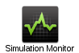

Hands-on: sharing models for multi-modality medical image simulation with VIP
This hands-on introduces the main semantic features in VIP, namely the model repository and the simulated data repository. We will exemplify them on brain MRI simulation.
Contents:
Exercise 1: explore the model repository (10 min)
- In your home page, open the model repository in Models:


- Click on "BrainWeb-Normal-with-T1-T2-PD-maps". The model has a single timepoint and instant, with 3 parameter maps defining the proton density, T1 and T2 values in every voxel of the model. It also has a list of anatomical objects describing the structures in the model. The toolbar on top of the panel shows that this model is ready for MRI simulation.

- Click on "BrainWeb-Severe-Multiple-Sclerosis-with-Maps". The model has a pathological layer containing a demyelination:

- With the "Download" button, you can download a model to inspect its files:

Back to top
Exercise 2: explore repository of simulated data (5 min)
- In your home page, open the simulated data repository in application Simulated data:

- Data are presented by modality, with their semantic type, list of parameters and model used to produce them.

- Click on a simulated data and open its model by choosing "View model" in the contextual menu. You can see the corresponding entry in the model repository.
- Click on a simulated data and open its simulation by choosing "View simulation" in the contextual menu. You can see the corresponding simulation and download its results.
Back to top
Exercise 3: import your own model (15 min)
In this exercise you will import a model composed of 4 parameter maps acquired in the VISAGES team at INRIA. This model will be used in an MRI simulation in the next exercise.
- Download the model maps in your computer (to start the procedure as if *you* produced the model): T1, T2, T2 star and proton density
- In your home, open the model repository
- Click on "New model":

- A tab containing two panels appears. The left panel will contain your model files. The right panel will contain the current status of your annotated model:

- Click on button "Add file" to upload map M0.nii.gz (proton density). Repeat the operation for T1.nii.gz, T2.nii.gz and T2s.nii.gz:

- Drag and drop the proton density map (M0.nii.gz) from the left to the right panel:

- The annotation panel appears. Select file type "Map", physical parameter "protonDensity", and layer "All":

- Click "OK". The map has been added to your model:

- Repeat this operation to add the T1, T2 and T2* maps. Your model is now valid for MRI:

- We will now annotate the model with anatomical terms. Right-click on "Instant" to add an anatomical layer. Expand this layer, right-click on "Objects" and select "Add object". A panel appears where you can search for terms in the ontology:

- Select "Skull" and validate.
- Right-click on the model name to change your model's name:

- And finally, commit the model to the repository:

- Your model should now be visible in the repository
Back to top
Exercise 4: launch simulations from model repository (10 min)
In this exercise, you will simulate MRIs using the SimuBloch simulator developed in the VISAGES team at INRIA.
- Make sure that WebGL is properly configured in your web browser by checking the Teapot test (you should see a 3D teapot).
- In the model repository, select your model and choose "Launch simulation from model" in the contextual menu (right-click):

- A 3D scene appears, showing a blue cube representing the bounding box of your model, and a representation of an MRI scanner. MRI was automatically selected since the model has magnetic parameters. Controls allow you to translate and rotate the model as well as the scanner:

- Select a simulator among the available MR sequences:
- Spin Echo: SE
- Gradient Echo: GRE
- Inversion Recovery - Spin Echo: IR-SE
- Inversion Recovery - Gradient Echo (MPRAGE): IR-GRE
- Spoiled Gradient Echo (SPGR, FLASH, T1-FFE): SP-GRE
- Coherent Gradient Echo (Partially Refocused (Rewound) Gradient Echo, FISP, GRASS, FFE, FAST): CoherentGRE
For instance, GRE:

- A tab containing simulation parameters appears. Information about the model and its geometrical transformation w.r.t. the scanner is already filled in. Fill in the input parameters with plausible values, for instance TR=120, TE=8 and result directory="/vip/Home". You can also load an example for this MRI sequence:

- Launch the simulation, and monitor it with "Simulation Monitor": 
- When the simulation is finished, download the resulting image (.nii.gz), and open it for visualization. If you don't have a .nii.gz viewer on your computer, you can use for instance VV (Windows, Linux 64 bits) or medInria (all platforms).

- Your image should also appear in the repository of simulated data:

That's it, we hope you enjoyed the hands-on.
Back to top